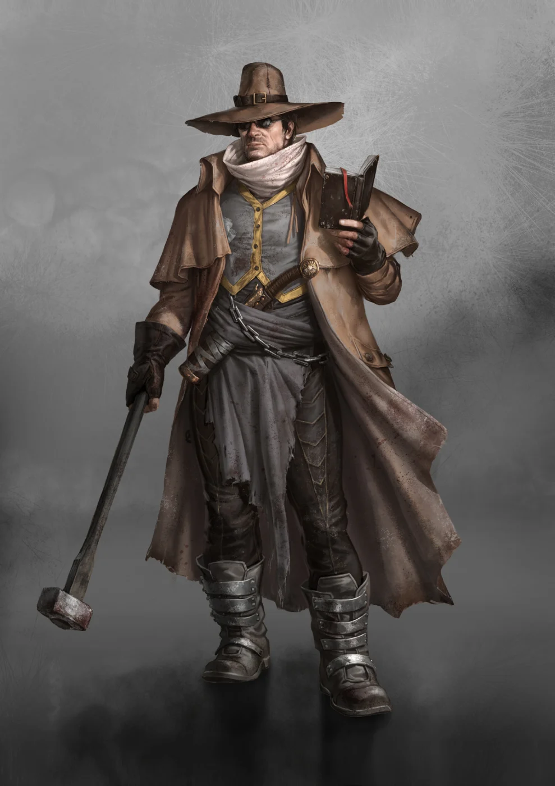

Leaders
- Supreme Judge
- Archot
- Senators
- Laakon
- Rutgar
- 14 Unnamed Senators
CULT DOSSIER
Hammer of Justice
+1 to maximum skill level

THE WORD & THE HAMMER
The Judges carry the law of Justitian across the Protectorate. Coat, hat, musket, Codex, and Judgment hammer announce their authority before they speak a word. They investigate crimes, settle disputes, hunt outlaws, protect settlements, and punish those who violate the order they have sworn to defend.
Their promise is simple: law stands between civilization and the brutality of the wasteland. A farmer who cannot defeat a bandit can appeal to a Judge. A merchant can travel roads protected by the Protectorate. A murderer may discover that fleeing one settlement does not place him beyond justice.
Yet Judge law comes from Justitian. Communities that already possess their own traditions, leaders, and grievances may experience protection as conquest.
The Cult traces itself to a solitary wanderer who appeared near Bochum in 2381. Calling himself simply the Judge, he traveled from settlement to settlement, mediating quarrels and passing brutally direct sentences upon thieves, murderers, raiders, and other criminals.
His hammer became the symbol of Judgment because necessity provided it. His broad hat, coat, goggles, and scarf became equally recognizable. Villagers began bringing prisoners before him, while young followers gathered around a man who seemed capable of imposing order upon a world that had forgotten it.
Eventually the First Judge disappeared. His followers continued without him.
Years later, his travel diary resurfaced. Filled with observations, judgments, maxims, and fragments of law, it became known as the Testament. Copies circulated among the growing brotherhood, and generations of interpretation transformed its principles into the Codex.
Chroniclers offered several Judges and allied Clans land beside the Central Cluster. Wells were fortified, buildings expanded, and the settlement eventually became Justitian.
As the city grew, the Judiciary changed with it. Justus I became the first Supreme Judge and elevated his interpretation of the Testament into a universal Codex. Advocates were charged with developing the law, while Protectors carried it into the streets and wasteland.
Success followed. Farms and settlements across West Borca entered the Protectorate, surrendering varying degrees of independence in return for security. Judgement stones appeared in communities far from the capital, and the hammer of Justitian became both promise and warning.
For many people, this bargain worked. Bandits disappeared, roads became safer, and disputes could be appealed beyond the strength of the local family.
The Codex begins with principles simple enough for almost anyone to understand: do not murder, do not steal, serve justice, seek wrongdoing, and alleviate suffering.
Centuries of interpretation have made everything surrounding those principles considerably more complicated.
Each Supreme Judge inherits and reshapes the Codex. Advocates add exceptions, precedents, punishments, procedures, and regulations governing everything from fraud and adultery to malpractice and relations with foreigners. Archot's long rule has produced a vast body of law that even Judges can struggle to navigate.
This creates a basic problem. Law should guide Judgment, but an answer now exists for almost every circumstance before the Judge even encounters it. Older Protectors remember an ideal in which the Codex supported judgment and common sense. Increasingly, some feel that judgment has become obedience to paragraphs.
Two traditions have existed almost from the Cult's beginning.
Protectors are the Judges most outsiders recognize. They ride into the Protectorate, hunt criminals, settle disputes, fight Clans and outlaws, and impose sentences directly. A Protector is expected to be physically capable, courageous, decisive, and willing to stand between ordinary people and violence.
Their critics say they often decide guilt first and search the Codex afterward.
Advocates believe justice without carefully constructed law is merely another form of violence. They study precedent, argue cases, interpret the Codex, and attempt to create rules capable of restraining both criminals and the Judges themselves.
Their critics say every new law makes the system more distant from the people it supposedly serves.
Both claim to preserve the First Judge's legacy.
Justitian does not rely heavily upon prisons. Feeding and guarding prisoners consumes resources while doing little to deter the next crime, so Judge punishments are designed to be immediate, visible, and memorable.
Lesser offenders may be marked. Thieves can have their hands stained blue, while liars and frauds have their lips similarly colored. The marks eventually fade, allowing the offender a second chance while warning everyone encountered in the meantime.
Repeat offenses bring harsher penalties. Bones may be smashed, tongues mutilated, property seized, or labor imposed. Murderers and other serious offenders can be branded, exiled, or executed.
The Judgment hammer therefore carries literal significance. It is not only a badge of office but an instrument through which sentence becomes physical reality.
Judges believe punishment should deter further wrongdoing. Those receiving it may see little distinction between deterrence and brutality.
Vagrants begin as apprentices, learning literacy, the Codex, human behavior, and the rituals of the Judiciary beside experienced Judges. Those who pass their examinations become City Judges and receive the familiar insignia of office.
From there, paths diverge.
Protectors pursue the martial tradition and may become feared Executioners. Advocates specialize in law and may rise as Arbiters whose command of the Codex can overturn the arguments of lesser Judges.
Assessors and Commissioners pursue more complicated investigations. They gather testimony, cultivate informants, study criminal organizations, and build cases where simply swinging a hammer would destroy the evidence needed to uncover the greater threat.
High Judges stand above these branches, while the two Senates shape Cult policy beneath the Supreme Judge.
The Judiciary knows that corruption can hide behind its own authority.
Black Judges operate against criminals within the Cult itself. Their identities are concealed, their orders delivered discreetly, and their methods are far removed from the public trials and solemn pronouncements associated with ordinary Judges.
They hunt those who use the Codex as protection for corruption, murder, or private ambition. Where an Advocate might demand procedure and a Protector demand open Judgment, a Black Judge may simply eliminate the offender.
Their existence reveals an uncomfortable truth: an institution built upon law sometimes uses people who operate outside its normal protections to preserve that law.
The Protectorate has always grown faster than the Judiciary can properly administer it. Jurymen therefore fill gaps in distant settlements. Respected local figures receive limited authority to settle lesser disputes, detain suspects, and impose temporary Judgments until a Judge arrives.
Expansion also creates resistance.
For decades the Judges pushed Clans outward, annexed settlements, destroyed outlaw communities, and planted Judgement stones throughout West Borca. Under Archot, this expansion reached extraordinary heights.
Now the pressure is reversing. The destruction of Archot's Colossus damaged the image of Justitian's invincibility. Clans once believed destroyed have resurfaced. The Cockroaches again strike from the ruins, the Exalters resist Justitian, and Protectorate settlements that once accepted Judge authority are beginning to reconsider the bargain.
The Judges still command enormous power, but a hammer cannot compel obedience everywhere at once.
Judges can genuinely make the wasteland safer. They can protect people who possess no other champion, restrain local tyrants, stop vendettas from becoming massacres, and create enough stability for farms and trade to survive.
They can also become the very authority from which people need protection.
A Protector may discover that strict enforcement creates rebellion. An Advocate may realize that a perfectly written law produces an unjust result. A Commissioner may tolerate lesser criminals to reach a greater one. A frontier Judge may have to choose between the Codex and a community whose customs make more sense on the ground than anything written in Justitian.
Every Judge carries both the Word and the Hammer.
The difficult part is knowing when justice requires one, when it requires the other, and when neither belongs in the Judge's hand.
THE JUDICIARY
Judges rise from apprenticeship into either the martial Protector tradition or the legal Advocate tradition, with investigative and clandestine paths branching from them.
THE LAW
WORD & HAMMER
Open or close each equipment group to focus the reference.